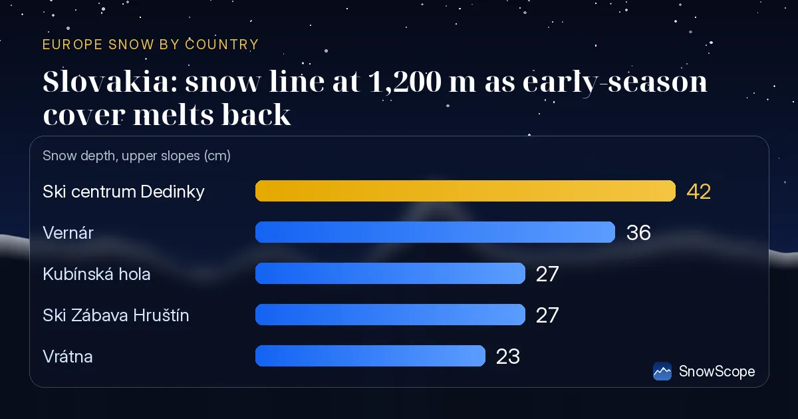
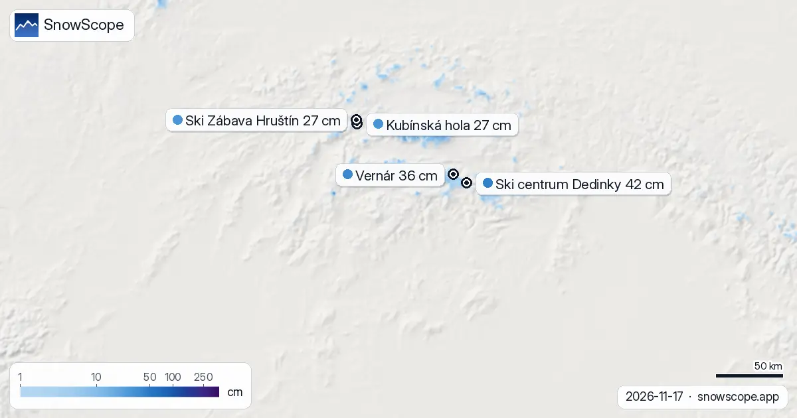

Slovakia: snow line at 1,200 m as early-season cover melts back
Slovakia's ski areas are still in the early-season fight for snow. Only 34 of 107 resorts have measurable cover today, with the snow line holding at 1,200 m as warmer air pushes the white edge uphill.
See the live snow forecast for Ski centrum Dedinky in the SnowScope appSnow depth, powder alerts and the 3D map, free.
Where the ground is white
The satellite picture today shows snow cover shrinking slightly: 1,830 km2 of Slovakia's ski terrain is white, down 190 km2 from yesterday. The snow line sits at 1,200 m, which means you need to climb above that height to find reliable ground cover. Below 1,200 m, only 3 to 39 percent of the land is snow-covered, depending on the exact slope and aspect.
Above 1,500 m, the picture changes sharply. At 1,500 to 2,000 m, mean depth reaches 9 cm and snow covers 99 percent of the ground. Higher still, between 2,000 and 2,500 m, depth averages 17 cm with full cover. This means the High Tatras and Low Tatras—both higher ranges—hold the best and most continuous snow.
| Resort | Snow depth | New snow, 72 h | Coming, next days | Top |
|---|---|---|---|---|
| Ski centrum Dedinky | 42 cm | 1 cm | 0 cm | 871 m |
| Vernár | 36 cm | 1 cm | 0 cm | 1,001 m |
| Kubínská hola | 27 cm | 3 cm | 3 cm | 1,390 m |
| Ski Zábava Hruštín | 27 cm | 3 cm | 2 cm | 1,141 m |
| Vrátna | 23 cm | 7 cm | 9 cm | 1,529 m |

Bands and what they mean
Breaking down the data by height band shows the stark contrast. From 500 to 1,000 m, snow is almost absent: mean depth is zero and only 3 percent of the ground is white. At 1,000 to 1,500 m, depth rises to 1 cm on average, but 39 percent of slopes still show bare ground. This band is a mixed zone where aspect and local weather matter a lot.
The jump from 1,500 m upward tells a different story. At 1,500 to 2,000 m, virtually all slopes are covered and depth hits 9 cm. Above 2,000 m, the snowpack thickens to 17 cm. If you plan to ski in the next few days, targeting elevation above 1,500 m will give you the best odds of consistent skiing.

New snow in the last three days
The 72-hour total shows real activity in the high mountains. The High Tatras and Low Tatras each received 8 cm in the last three days, while Malá Fatra saw 7 cm. These are the snowiest zones right now. Only 280 km2 of Slovakia's ski terrain has picked up at least 5 cm of new snow in that period, so the fresh snow is concentrated in the higher, northern ranges.
Resorts that lead today
Ski centrum Dedinky holds the deepest pack at 42 cm, though it sits lower at 871 m and is in the marginal zone for cover. Vernár, also low at 1,001 m, holds 36 cm but expects little new snow in the next three days. The story shifts when you look at elevation gain and future potential. Vrátna, at 1,529 m, shows 23 cm today with 7 cm of new snow in 72 hours and a forecast 9 cm in the next three days. Kubínská hola, at 1,390 m, sits on 27 cm and should gain 3 cm in the coming three days. These higher resorts align with the snow-line reality and offer better stability as the season progresses.
What's coming
The next three days will see a maximum of 7 cm of new snow across Slovakia. November 23 is the snowiest day in the forecast, with 4 cm expected. Looking seven days ahead, up to 12 cm is possible. This is modest by winter standards, but it will help push the snow line higher and deepen the cover above 1,500 m. Snow arriving on higher slopes will improve the picture, especially in the Tatras.
The regional picture
Neighbouring Poland is tracking similarly at 11 percent white cover, with its leader Karpacz at 44 cm and up to 13 cm possible in seven days. Czechia lags at only 1 percent cover, with its leader Ramzová at 22 cm. Slovakia sits between them. Early season is always uncertain—rocks and thin patches hide under new snow, and warm spells can erase gains fast. Use our app to track depth and coverage minute by minute at your chosen resort. Check the official avalanche bulletin before skiing off-piste, especially on steep terrain where fresh snow may not bond well to the old base.
Tips for skiers
- Ski above 1,500 m for the most reliable snow depth and cover. Resorts like Vrátna and Kubínská hola, both above 1,390 m, will benefit most from incoming snow.
- Watch the High Tatras and Low Tatras: they lead with the most recent accumulation and highest elevations. Plan your trips to these ranges in the next week.
- Expect variable conditions below 1,200 m. Early-season snow is thin and patchy; rocks may emerge. Stay on marked pistes and check with the resort for safe routes.
- The forecast brings 7 cm in three days and 12 cm in seven days. This is enough to raise the snow line and deepen the high-mountain pack, but not enough to transform the season in one week.
- Before venturing off-piste, consult the official avalanche bulletin. Fresh snow on thin base, especially on steep slopes, may not hold safely.
About these numbers
Resort snow depths are the deepest snow on the resort's upper slopes from the SnowScope snow model (about 1 km, run of 17 November); they are estimates for an area, not a measurement at one point. Station values are measurements on the date shown. Forecasts can change. Always read the official avalanche bulletin before going off-piste.
Cite this report
For research, teaching or the press: the numbers and charts are free to reuse under CC BY 4.0 with this citation.
SnowScope (2026), Slovakia: snow line at 1,200 m as early-season cover melts back, https://snowscope.app/blog/en/2026/11/slovakia-snow-report-17-november-2026.html, accessed 2026-11-17
SnowScope (Atlas Labs). (2026, November 17). Slovakia: snow line at 1,200 m as early-season cover melts back. SnowScope snow reports. https://snowscope.app/blog/en/2026/11/slovakia-snow-report-17-november-2026.html
BibTeX
@misc{snowscope2026slovakiasnowreport17nove,
author = {{SnowScope (Atlas Labs)}},
title = {Slovakia: snow line at 1,200 m as early-season cover melts back},
year = {2026},
month = nov,
howpublished = {\url{https://snowscope.app/blog/en/2026/11/slovakia-snow-report-17-november-2026.html}},
note = {Published 2026-11-17 12:53 UTC; accessed 2026-11-17}
}· CC BY 4.0 · Methods, data and tools →
Ski centrum Dedinky: snow and temperature by height, this winter vs last (tools) →
Follow Ski centrum Dedinky
Free: a message when fresh snow is coming, and the forecast every morning.
More snow reports

Only Borovets and Bansko have a trace of snow at the top today, 2 cm each. A week ago Borovets had 11 cm. Day by day, and the one snowy day in the forecast.

From 13 to 19 November 2026 Slovenia got the most snow and kept it; Serbia and Croatia had a deep but short white weekend; Montenegro only on Durmitor; Bulgaria almost none. The ranking, with links to each country report.

Snow is falling on Slovenia's ski mountains today: about 37 cm on Kanin and 21 cm on Krvavec. Where the snow lies, how it compares with past winters, and the next snowy day.